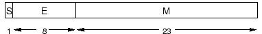

| Choisissez votre langue ! | Choose your language ! |
Prenons l'exemple des flottants en simple précision ; les 32 bits (bi ) sont répartis en :

Voici une comparaison entre la représentation simple précision et la représentation double précision.
Let's take the example of single-precision floats; the 32 bits (bi ) are divided into:
Here is a comparison between the single precision representation and the double precision representation.
|
Signe
sign
|
Exposant
Exponent
|
Mantisse
Mantisssa
|
|
|---|---|---|---|
|
Simple Précision
Simple precision
|
1 [31] | 8 [30-23] | 23 [22-00] |
|
Double Précision
Double precision
|
1 [63] | 11 [62-52] | 52 [51-00] |
Le bit de poids fort de la mantisse est déterminé par la valeur de l'exposant. Si l'exposant est différent de 0 et de 2 e − 1 , le bit de poids fort de la mantisse est 1, et le nombre est dit 'normalisé' . Si l'exposant est nul, le bit de poids fort de la mantisse est nul, et le nombre est 'dénormalisé' . Il y a quatre cas particuliers :
Nous pouvons résumer les exceptions ainsi:
The most significant bit of the mantissa is determined by the value of the exponent. If the exponent is different from 0 and from 2 e −1 , the most significant bit of the mantissa is 1, and the number is said 'normalized' . If the exponent is zero, the most significant bit of the mantissa is zero, and the number is 'denormalized' . There are four special cases :
We can summarize the exceptions like this:
| Type |
Exposant
Exponent
|
Mantisse
Mantissa
|
|---|---|---|
| Zeros | 0 | 0 |
|
Nombres dénormalisés
Denormalized numbers
|
0 |
différente de 0
distinct from 0
|
|
Nombres normalisés
Normalized numbers
|
1 à 2 e − 2 |
quelconque
any
|
|
Infinis
Infinite
|
2 e − 1 | 0 |
| NaNs | 2 e − 1 |
différente de 0
Distinct from 0
|
Ce programme illustre la représentation en machine des flottants simple précision normalisés.
A l'instar des entiers long, Python propose un type pour représenter les flottants grande précision, il s'agit du type décimal. L'utilisation de ce type permet de s'affranchir de la mauvaise représentation des réels par le type flottant standard, qu'il soit sur 4 ou 8 octets. Voici un exemple pour illustrer cela:
Le résultat de l'exécution:
0.66666666666666663000
0.6666666666666666666666666667
Il y a 3 valeurs spéciales de flottants qui ne correspondent à aucun nombre réel
This program illustrates the machine representation of normalized single-precision floating-points.
Like long integers, Python offers a type to represent high-precision floating points, it is the decimal type. The use of this type makes it possible to overcome the bad representation of the reals by the standard floating type, whether it is on 4 or 8 bytes. Here is an example to illustrate this:
The result of running:
0.66666666666666663000
0.6666666666666666666666666667
There are 3 special values of floats which do not correspond to any real number
Float16
|
Float32
|
Float64
|
Nom
Name
|
Description |
|---|---|---|---|---|
Inf16
|
Inf32
|
Inf
|
Infini positif
Positive infinite
|
Une valeur plus grande que tous les flottants
A value greater than all floats
|
-Inf16
|
-Inf32
|
-Inf
|
Infini négatif
Negative infinite
|
une valeur plus petite que tous les flottants
a value smaller than all floats
|
NaN16
|
NaN32
|
NaN
|
Not a number | A value distinct from any float even from itself |
La plupart des nombres réels ne peuvent pas être représentés de façon exacte par un flottant, et pour de nombreuses raisons il peut être utile de connaître la précision, c'est à dire la distance entre deux réels représentables, ce nombre étant connu comme "l'epsilon-machine"
Le langage fournit la fonction eps qui donne cette valeur.
Programme de démonstration :
Most real numbers cannot be represented exactly by a float, and for many reasons it can be useful to know the precision, i.e. the distance between two representable reals, this number being known as "l 'epsilon-machine'
The language provides the eps function which gives this value.
Demo program:
|
Création Gilles Dubois
Created by Gilles Dubois
|
Janvier 2022
January 2022
|
Version mobile Jquery
Mobile Jquery version
|